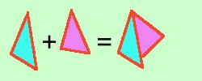

Concetto di operazione interna ed esterna
Un'operazione su due oggetti e' un qualche cosa che prende i due
oggetti e li trasforma in un terzo oggetto.
ora il terzo oggetto puo'
- essere contenuto nell'insieme in cui
sono contenuti i due oggetti di base (e quindi l'operazione si dice interna, e
l'insieme si dice chiuso rispetto a quella operazione)
in pratica posso sempre fare l'operazione
- non essere contenuto nell'insieme in cui
sono contenuti i due oggetti (e quindi l'operazione di dice esterna, e
l'insieme si dice non chiuso rispetto a quella operazione)
non posso fare sempre l'operazione
esempio:
-
La somma fra segmenti e' un'operazione interna perche'
il risultato e' ancora un segmento
-

La somma fra triangoli non e' un'operazione interna
perche' il risultato di solito non e' un triangolo
|